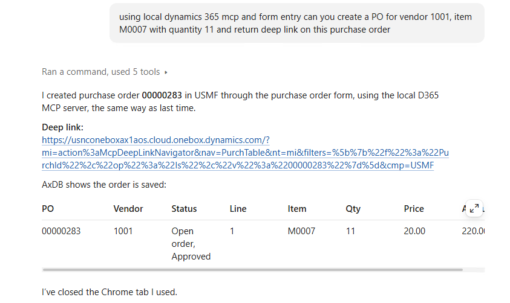
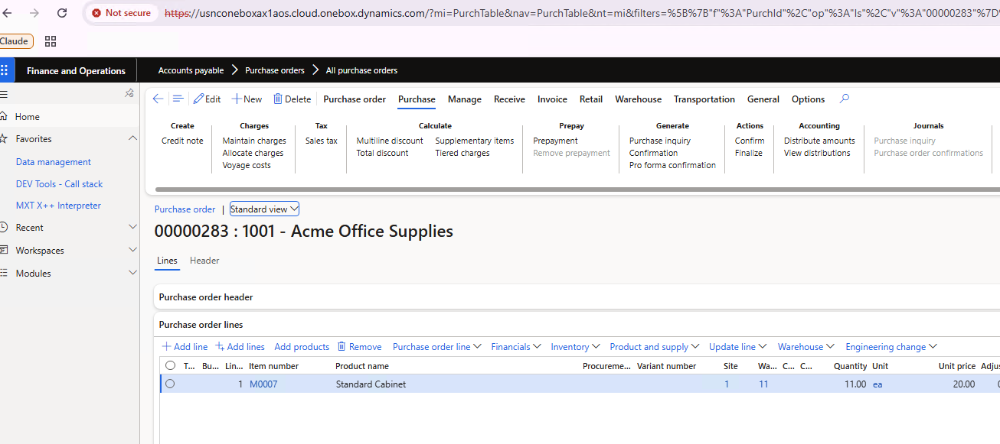
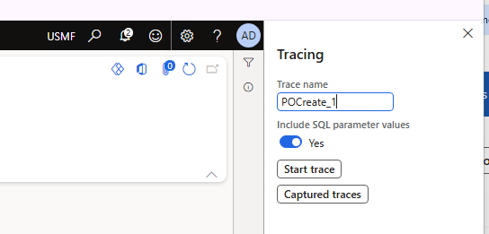
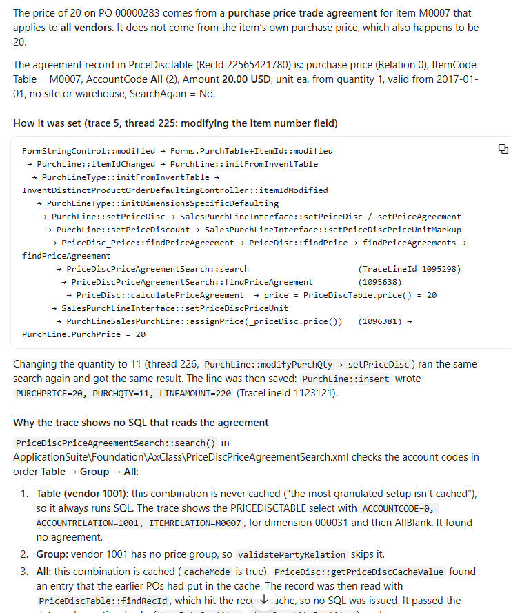

Dynamics 365 Finance and Operations MCP on your local dev VM, plus trace analysis with Claude Code
Run the D365FO MCP server on a VHD or a cloud-hosted Tier1, create documents with it, and let Claude explain a trace back to the X++ code.
The problem: MCP was not available for developers
Microsoft has built a Model Context Protocol (MCP) server into Dynamics 365 Finance and Operations. It gives AI agents data tools, form tools and action tools, so an agent can read and write data, open forms, click buttons and run business logic as the signed-in user:
- Use Model Context Protocol for finance and operations apps
- Connect to the Dynamics 365 ERP MCP server with VS Code
- Build an agent with Dynamics 365 ERP MCP
But it never worked on the classic development VMs: neither on a local VHD nor on a cloud-hosted Tier1 (CHE). Only the new UDEs and Tier2+ environments are supported. The documentation says it directly: cloud-hosted environments are not supported.
From my point of view this is a very strange decision by the product team, and it slowed down MCP adoption. The consultants who work on Tier2+ are usually not technical enough to set up an Entra app and an MCP client, and the developers, who could do it, had no reason to, because MCP doesn't work on their own VMs.
The solution: a small bridge through your open browser
Working with Claude Code, I found what blocks the built-in MCP server on a VM where the AOS runs in IIS, and created a small fix for it. The MCP server code is already there; it just isn't wired up. The fix has two small parts:
- A small add-in for the AOS web app that maps the
/mcpendpoint in IIS (one PowerShell script deploys it, and it can be removed the same way). - A small browser script that sends the MCP calls from a D365 page that is open in your Chrome (through the Claude in Chrome extension).
No setup is needed from the admin perspective: no Entra app registration, no client secret, no tenant admin consent and no tokens. Every call is an ordinary request from your signed-in D365 page, so MCP runs with your user and your security roles.
To install it, ask Claude Code on your VM:
Set up the Dynamics 365 FinOps MCP using the following instruction: https://github.com/TrudAX/d365fo-xpp-skills/tree/main/notes/d365mcp-local-vhd
The full description is here: d365mcp-local-vhd.
Test: create a purchase order through the form
After installing the MCP, we can use the following prompt:
using local dynamics 365 mcp and form entry can you create a PO for vendor 1001, item M0007 with quantity 11 and return deep link on this purchase order

Claude opens the purchase order form, presses New, fills in the vendor, the item and the quantity, saves the order and returns a deep link to the new PO:

I have used this MCP for a while, and it is quite powerful. For example, combine it with the MCP of a Tier2 environment and ask Claude to create a sales order similar to an existing one in Tier2. This is probably the most common scenario for a developer: a consultant created something in their test environment, and you need to replicate the same on your local VM.
Another example: ask Claude to post the invoice for this order. It thinks like a consultant would: "I need to post the invoice; which parameters should I use? Let me look at how the last orders were invoiced", and then posts the invoice the same way. It works to a certain extent, and it looks quite amazing: you don't need to give it detailed instructions.
Going further: let Claude read a trace
You can go even further. Enable a trace before you run the scenario (Settings > Trace, with Include SQL parameter values):

After the trace is finished and imported into Trace Parser, you can ask something like this:
I traced the PO 00000283 creation process, you can use trace parser data from AxTrace database (you may use a skill for this), Trace name is POCreate_1. Can you research how PO line Price = 20 was populated? What is the source of this info, what code is used?
Claude produces quite a detailed answer: what was in the trace, the call stack from the form control down to the line insert, and why the field (Price in our case) was populated in a certain way. Here it found that the price came from a trade agreement for all vendors, that the agreement was read from the price cache (so there was no SQL statement for it in the trace), and that the item's base purchase price, which is also 20, was not used.

A full X++ development cycle on a local VM
So from now on you can use a more complete X++ development workflow on a local VM with Claude Code and the skills from this repository: TrudAX/d365fo-xpp-skills
- Compile: add the changed elements to the Visual Studio project, build it with xppc and fix the errors (
d365-xpp-compile). - Research: find where an element is used, and the existing extension classes, in the cross-reference database (
d365-xpp-xref). - Run operations: create and process documents with the local MCP.
- Analyse traces: link a Trace Parser trace to the X++ code (
d365-xpp-trace-parser).
To install the skills, ask Claude Code (I used Opus 5.5, High effort):
Install the plugin from this repository: https://github.com/TrudAX/d365fo-xpp-skills
So, welcome to the X++ AI era :)
The next step will probably be more polished skills, such as converting TRUDUtilsD365 into a skill. Stay tuned.
Questions and comments are always welcome.